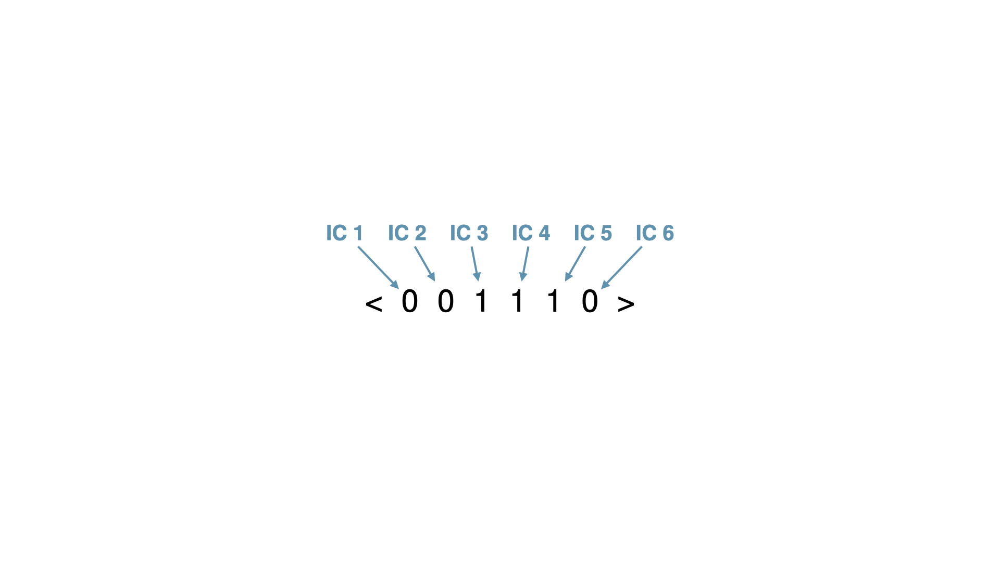
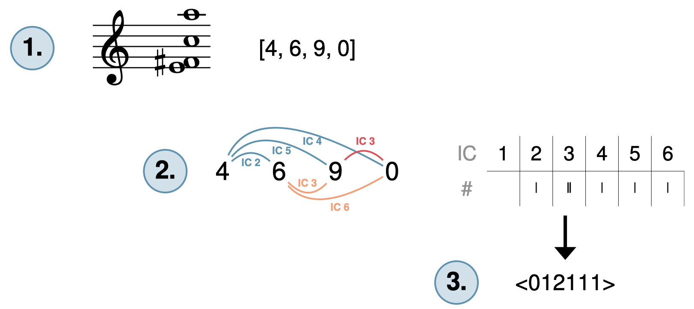

Open Music Theory：繁體中文版
音程類向量
先試一個簡單例子：C大三和弦。三個音高類共有三種配對：根音與三音、三音與五音、根音與五音。C–E是大三度（IC4），E–G是小三度（IC3），C–G是完全五度（IC5）。
音程類向量把這些結果整理為尖括號內的六個計數項目；每項對應一種音程類，如例1。C大三和弦的向量為<001110>，表示它包含：
{kind=link}

IC＝音程類。
六項由左至右表示IC1至IC6的個數：0、0、1、1、1、0。
- 0個IC1
- 0個IC2
- 1個IC3
- 1個IC4
- 1個IC5
- 0個IC6
查看英文原文
Key Takeaways
- The overall sound of a set class is characterized in part by the intervals between the pitch classes.
- An interval class vector is a tally of each interval class inside the set, written as a six-digit number enclosed in angle brackets (<xxxxxx>).
- Each digit in the interval class vector corresponds to the count of a certain interval class: the first digit is the number of IC 1s, the second is the number of IC 2s, and so on. For example, in a C major triad, there are 0 of IC 1, 0 of IC 2, 1 of IC 3, 1 of IC 4, 1 of IC 5, and 0 of IC 6; so, our interval-class vector is <001110>.
- Interval class vectors may be helpful for recognizing set classes as they occur in pieces of music: if you know what the possible interval classes are within a set class, you might look for those interval classes in the piece.
- Sets containing a greater number of pitch classes have, correspondingly, more and/or higher numbers in their interval-class vector. Each trichord has 3 available interval classes (and so the vector should always total to 3), each tetrachord has 6 (and so should sum to 6), each pentachord has 10, and so forth.
The quality of any sonority can be roughly quantified by summarizing all the intervals it contains. Because all of the intervals contained in a sonority contribute to its overall sound, we must find the interval class (IC) formed by each pitch class in a set, not just those that are next to each other.
Let’s try a simple example first: a C major triad. There are three possible interval classes to be made using the pitch classes of this triad: between its root and third, third and fifth, and root and fifth. C–E is a major third (IC 4), E–G is a minor third (IC 3), and C–G is a perfect fifth (IC 5).
Interval class vectors summarize this as a six-digit number enclosed in angled brackets; each digit corresponds to the count of a certain interval class, as shown in Example 1. The IC vector for the C major triad is <001110>, which shows that the C major triad has:
- 0 of IC 1
- 0 of IC 2
- 1 of IC 3
- 1 of IC 4
- 1 of IC 5
- 0 of IC 6
求音程類向量，就是逐一計算聲響中每一對音高類所形成的音程類。可以依下列三步進行：
- 將集合寫成標準排序。
- 找出每一對音高類的音程類，並在計數表中記錄。
- 將各欄的計數轉成數字，空欄也要寫0，再用尖括號< >括起來。
尖括號可以把向量與分析中的其他整數記法區分開：標準排序用方括號，原型用圓括號。
例2以E4、F♯4、C5及A5這組音高，示範計算流程：
- 此集合的標準排序是[4, 6, 9, 0]。
- 逐對計算音程類，並用劃記方式記錄：
- 先從最左邊的音高類4開始，算它與右側每個音高類的音程類，如例2的藍色弧線。
- 向右移到音高類6，再算它與右側每個音高類的音程類，以橘色弧線表示。不要往左重算，因為那些配對已在前一步算過。
- 再向右移到音高類9，計算它與右側音高類的音程類。因為這是四音集合，所以只剩最後一對，以紅色弧線表示。
- 把劃記轉為數字，便得到音程類向量<012111>。
{kind=link}

1：音高類去重並排成[4,6,9,0]。
- 2：藍色4–6為IC2、4–9為IC5、4–0為IC4；
- 橘色6–9為IC3、6–0為IC6；
- 紅色9–0為IC3。
- 計數表的IC欄是音程類1至6，#表示個數，不是升記號；
- 劃記依序0、1、2、1、1、1。
3：寫成向量〈012111〉。
音高類越多，可形成的音程配對越多，因此向量的非零項通常更多，或各項數值更大。三音集合有3個配對，向量總和為3；四音集合有6個，總和為6；五音集合有10個，依此類推。
算完向量後，可以把各項加起來，確認總和是否正確。若已知道集合的原型，也可以對照維基百科等來源的集合類表；這些表通常會列出各集合類的音程類向量。
例3是前述內容的教學影片。
例3。音程類向量教學影片。
查看英文原文
Method
To figure out the interval-class vector, we’re going to simply figure out the interval class created by each combination of two pitches in the sonority. Here is a three-step process for creating an interval-class vector:
- Write the set in normal form.
- Find the interval class for every combination of two pitch classes. Record your results on a tally chart.
- Convert the tallies in each column (including empty columns) to numerals, and enclose these totals in angle brackets < >.
We contain the vector in angled brackets to differentiate it from other strings of integers that might appear in our analysis, like normal form (which gets square brackets) or prime form (which uses parentheses).
Example 2 illustrates this process with the collection of pitches E4, F♯4, C5, and A5:
- The normal form of this set is [4, 6, 9, 0].
- Count each interval class between each pair of pitch classes and keep track using a chart of tally marks:
- Begin on the leftmost pitch class (here, 4) and calculate the interval class between it and every pitch class to the right. These interval classes are shown with blue arcs in Example 2.
- Move to the right one pitch class (here, 6) and calculate the interval class between it and every pitch class to the right (don’t count to the left, because you already counted that interval class in step 2a). These interval classes are shown with orange arcs.
- Move to the right one pitch class (here, 9) and calculate the interval class between it and every pitch class to the right. Because we have a four-pitch-class set, this is the final interval class, shown with a red arc.
- Converting the tally marks from step 2 into numerals yields the interval-class vector <012111>.
Sets containing a greater number of pitch classes will naturally have more and/or higher numbers in their interval class vectors because there are a lot more intervals at play. Each trichord has three available interval classes (and so the vector should always total to three), each tetrachord has six (and so should sum to six), each pentachord has ten, and so forth.
One way of checking your work after calculating an interval-class vector is to add the number of interval classes up and ensure they total the correct number. If you know the prime form of your set, you can also check against a list of set classes, such as this list from Wikipedia, since they typically include interval-class vectors for each set class.
Example 3 is a video lesson of the above information.
Example 3. Video lesson on interval-class vectors.
音程類向量顯示作曲家可從某集合運用哪些音程，有助於理解其特定聲響或聯想。有些集合的各種音程類分布相當平均，無調性作曲家尤其重視這項特性；另一些集合則偏重某些音程類，甚至完全不含其中某一類。
向量也能幫助我們在聽覺與分析之間建立聯繫，找出兩個以上集合之間不易立刻察覺的關係。若它們的音程類分布相似，在自由無調性的語境中，也可能呈現相似聲響。
媒體來源與授權
- 音程類向量圖（IC vectors），© Megan Lavengood，採CC BY-SA（姓名標示—相同方式分享）授權。
- 音程類計數圖（tallying ICs），© Megan Lavengood，採CC BY-SA（姓名標示—相同方式分享）授權。
查看英文原文
Interval-class vectors in analysis
The interval-class vector tells us what intervals a composer may exploit from a particular set, which gives us the set’s particular sound and/or associations. Some sets contain a more or less even distribution of all the interval classes and are especially prized by atonal composers for these properties, while others are especially heavy on one interval class or another and may contain none of a particular interval class.
Interval-class vectors also help us to make aural-analytical connections between two or more sets that may not appear to be immediately related. If they share a similar distribution of interval classes, they will also sound similar in a free-atonal context.
- Worksheet on Interval-Class Vectors (.pdf, .docx). Asks students to calculate interval-class vectors for several sets.
Media Attributions
- IC vectors © Megan Lavengood is licensed under a CC BY-SA (Attribution ShareAlike) license
- tallying ICs © Megan Lavengood is licensed under a CC BY-SA (Attribution ShareAlike) license